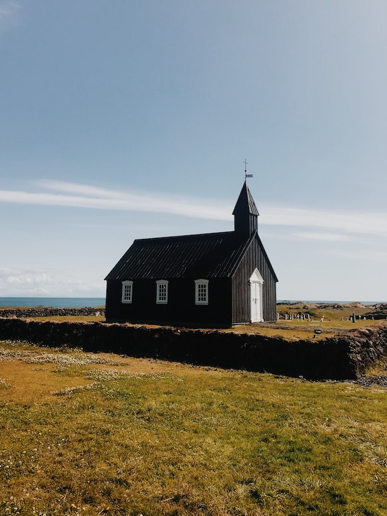

Argentina
El Calafate é uma pequena cidade na Patagônia argentina, aos pés da Cordilheira dos Andes, de paisagens pitorescas e famosa por sua proximidade ao Glaciar Perito Moreno, talvez o de mais fácil acesso pelo homem, e outros glaciares. Sua localização também atrai os praticantes de trekking, já que permite visitar facilmente El Chaltén, capital da modalidade na Argentina, e Torres del Paine, famoso parque chileno.